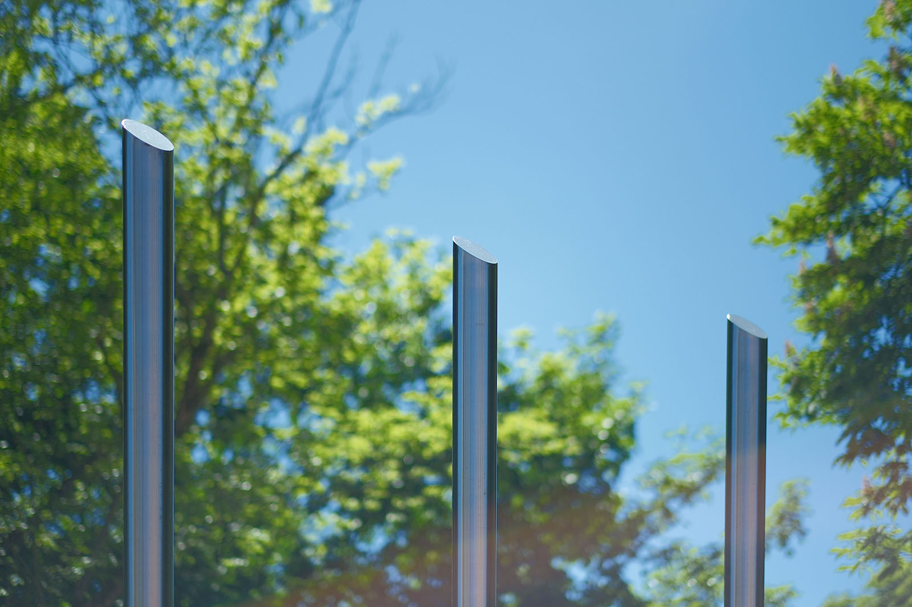
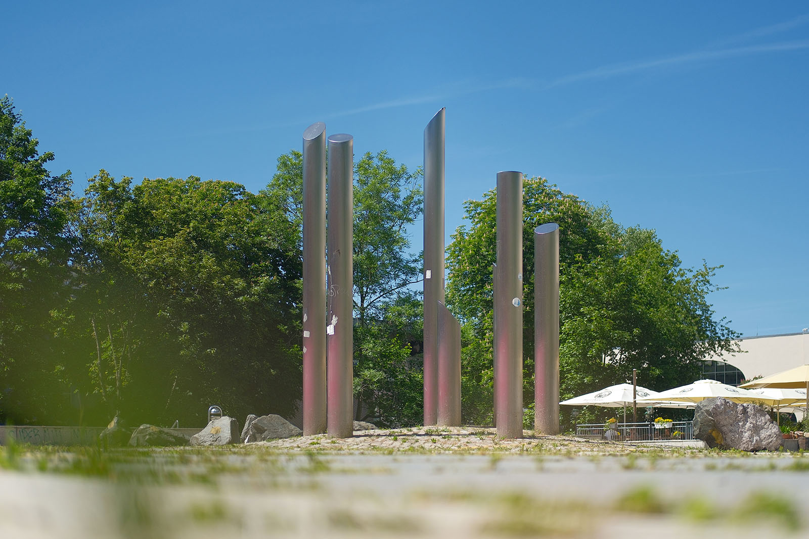
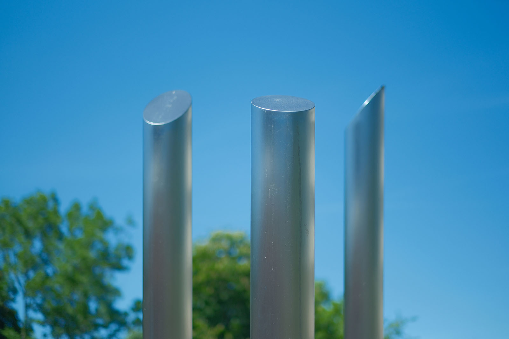
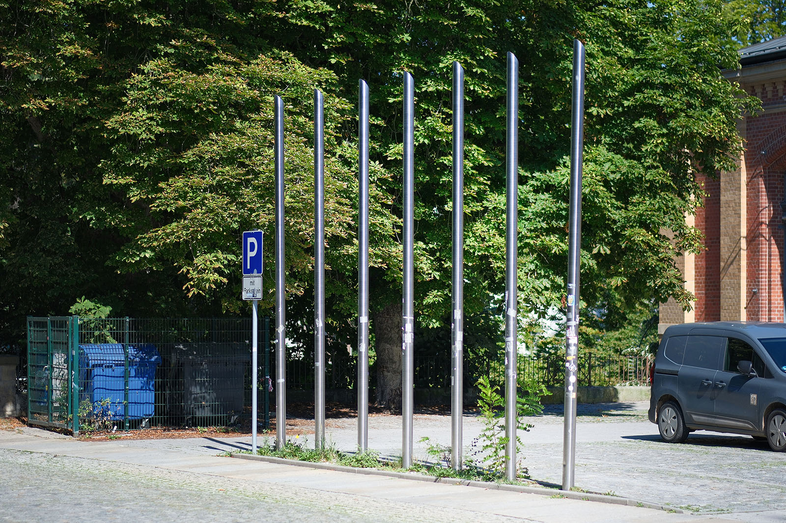

Recherche und Werkbeschreibung: Roman Pilz. Text und Fotografien wechseln sich wie in einem Magazin ab. Ein Klick auf ein Bild öffnet die Großansicht.
Die zweiteilige Gruppe von Metallplastiken des Chemnitzer Künstlers Ralph Siebenborn (heute tätig in Pobershau/Erzgebirge) geht zurück auf eine private Initiative des ehemaligen Besitzers der Chemnitzer Markthalle Peter Waldvogel (1952–2022).
Der aus Ravensburg stammende Architekt hatte sich kurz nach der deutschen Wiedervereinigung in Chemnitz niedergelassen und entwickelte in der Folge eine Reihe von denkmalgeschützten Bauwerken in Chemnitz. Nach dem Kauf der Markthalle wurde diese 1994/95 saniert – Kunstwerke verschiedener Künstler sollten die Markthalle neben dem Handel auch kulturell bereichern. Ralph Siebenborn gewann den vom Waldvogel ausgeschriebenen Wettbewerb und konnte seine Allegorie von den "7 mageren und 7 fetten Jahren" in der Folge realisieren.
Gute Zeiten, schlechte Zeiten
Die Metallskulptur „7 magere und 7 fette Jahre“ von Ralph Siebenborn (1998), an der Markthalle
Inspiration für den symbolhaften Gehalt der zwei Gruppen von auf den ersten Blick abstrakten Edelstahlstelen ist eine Überlieferung aus dem Alten Testament. Josef deutet einen Traum des ägyptischen Pharaos: Dieser sah im Schlaf erst sieben fette Kühe und anschließend sieben magere Kühe – letztere verschlangen erstere, ohne ihre Gestalt zu verändern. Die Geschichte gilt allgemein als Sinnbild der Abfolge von wirtschaftlich guten und schlechten Zeiten.

Die sieben am oberen Ende abgeschrägten, runden Edelstahlsäulen an der Südseite der Markthalle, neben der Bierbrücke, stehen im selben Abstand in einer festen Reihe. Alle sind gleichgeformt – gleich hoch und gleich dünn. Die sieben Säulen im Norden stehen dagegen in einem lockeren Kreis auf dem Seeberplatz. Ihre abgeschrägten Enden variieren im Winkel, ebenso wie ihre Höhe und ihr Durchmesser. Die Säulen der "fetten Jahre" sind insgesamt dicker als die der "mageren Jahre" und stehen auf einem fest mit Kopfsteinpflaster befestigten Boden, während die hageren "Verwandten" zwischen lockeren Kieseln aus dem Boden ragen.

Der Künstler scheint in der Not Anpassungszwang und Gleichförmigkeit zu sehen, dagegen bietet Wohlstand die Gelegenheit zur individuellen Entfaltung.

Gute Zeiten, schlechte Zeiten
Die Metallskulptur „7 magere und 7 fette Jahre“ von Ralph Siebenborn (1998), an der Markthalle
